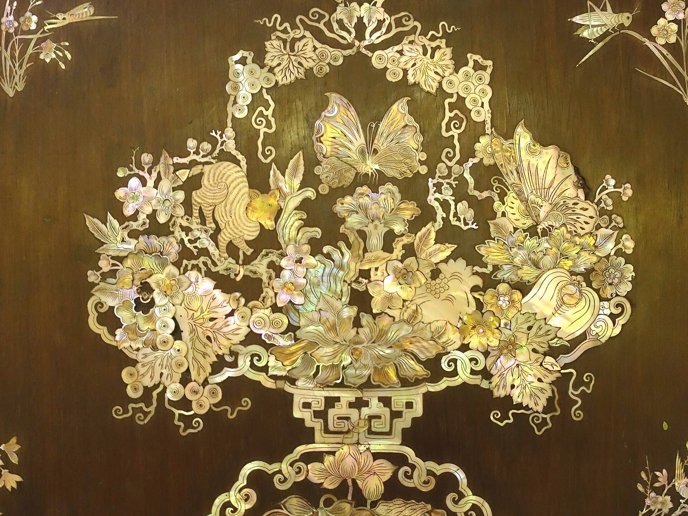
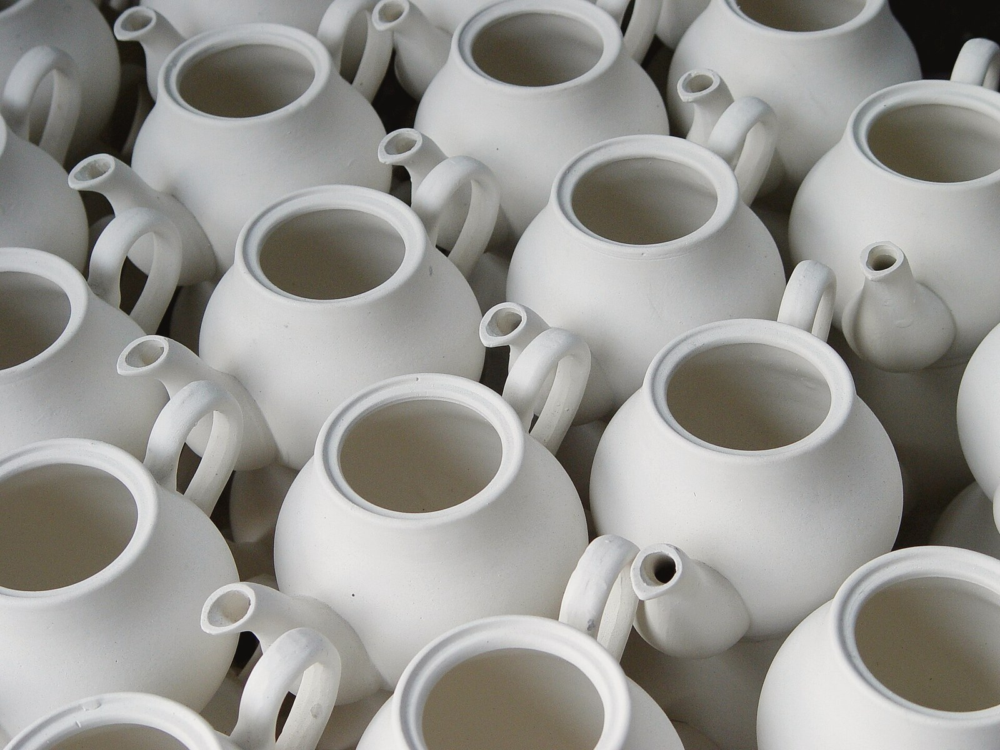
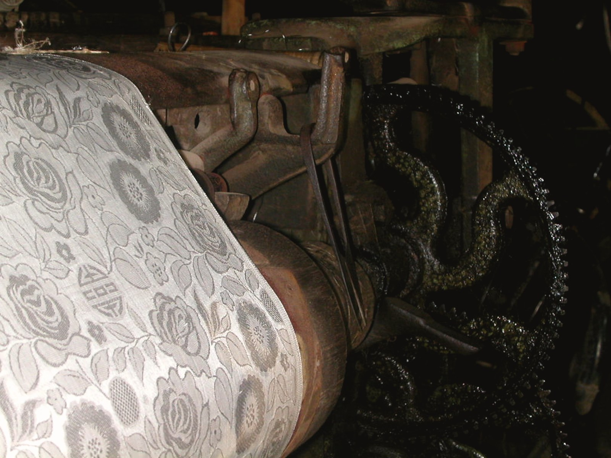
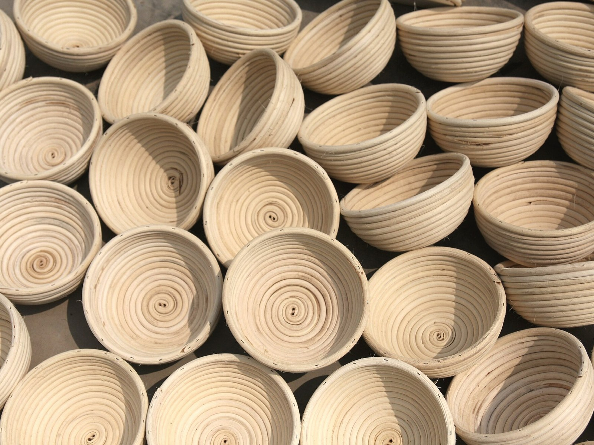

Làng nghề
Bốn làng nghề Việt Nam đang làm nên những thiết kế này.
Mỗi thiết kế bắt nguồn từ một làng nghề, giữ lại kỹ thuật và chất liệu của làng, rồi được tinh giản cho không gian sống hiện đại.

Bắc Ninh
Làng chạm gỗ Đồng Kỵ
Nghề chạm khắc gỗ lâu đời, nổi tiếng với các đường gờ và hoa văn chạm tay. Thiết kế: Tủ Đồng Kỵ.
Đọc câu chuyện làng →
Hà Nội
Làng gốm Bát Tràng
Nghề gốm sứ truyền thống với men và dáng bầu quen thuộc. Thiết kế: Ghế đôn Bát Tràng.
Đọc câu chuyện làng →
Hà Nội
Làng lụa Vạn Phúc
Nghề dệt lụa tơ tằm với những tấm lụa mềm, ánh sáng dịu. Thiết kế: Bình phong Vạn Phúc.
Đọc câu chuyện làng →
Hà Nội
Làng mây tre đan Phú Vinh
Nghề đan mây tre cổ, sợi đan chắc và nhẹ. Thiết kế: Ghế mây tre Phú Vinh.
Đọc câu chuyện làng →